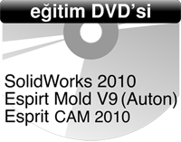

| |
3 eþsiz eðitim Yenasoft'tan:
SolidWorks 2010, Esprit Mold V9 (Auton), Esprit CAM 2010 Eðitim DVD'si |
|
SolidWorks, Esprit CAM ve Esprit Mold (Auton) eðitimlerinden oluþan DVD, Yenasoft Yazýlým'ýn tecrübeli ve sertifikalý eðitim uzmanlarý tarafýndan hazýrlandý.
Bu üç yazýlýmýn da tüm detaylarý ile anlatýldýðý DVD'ye sahip olmak için www.yenasoft.com sitesine girip eðitim DVD'si formunu doldurmanýz yeterli. |
SolidWorks 2010, Esprit Mold V9 (Auton), Esprit CAM 2010 Eðitim DVD'sinin içinde neler var?
- SolidWorks 2010 Yenilikleri
- SolidWorks 2010 Eðitimi (Yeni Türkçe Arayüz)
- SolidWorks Simulation & Enterprise PDM & 3DVIA Composer 2010 Yenilikleri
- Esprit Mold V9 (Auton) Eðitimi
- Esprit CAM 2010 Eðitimi
|
|